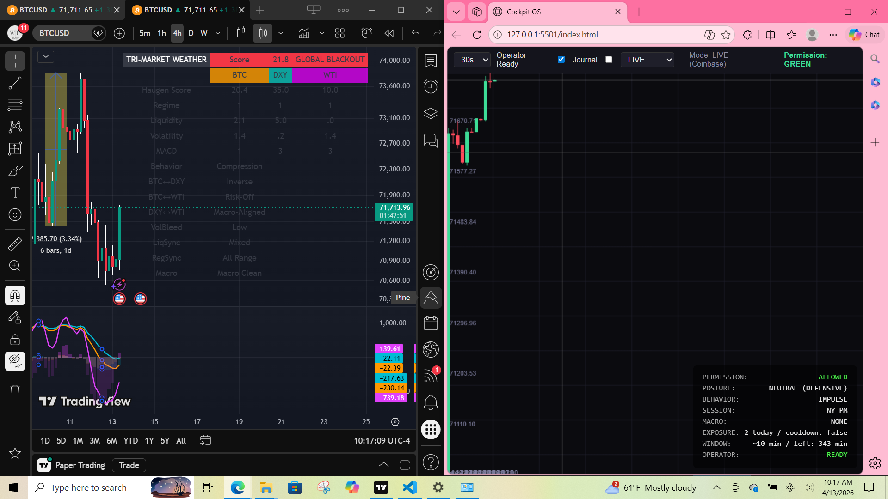
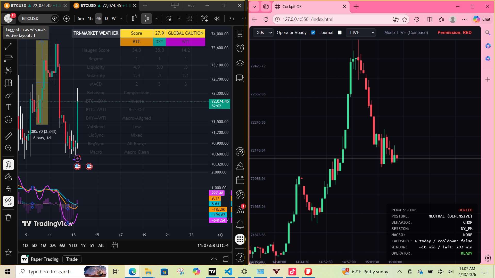
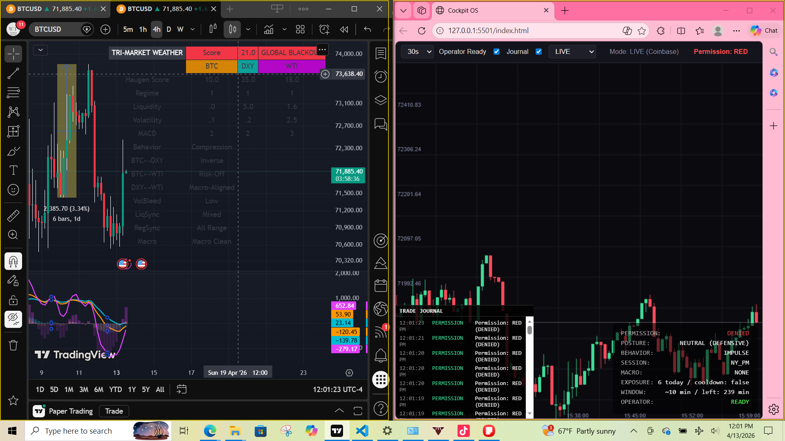
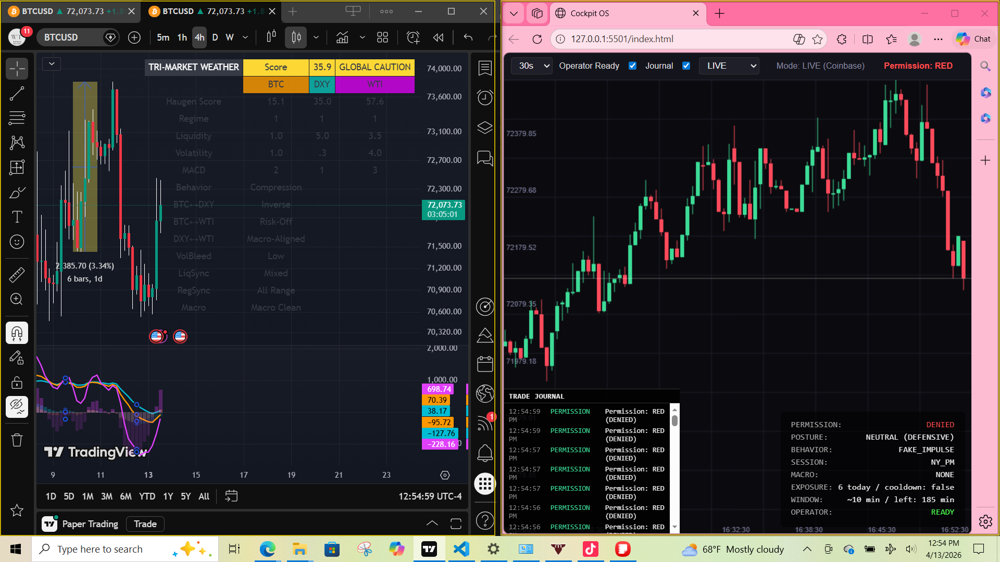
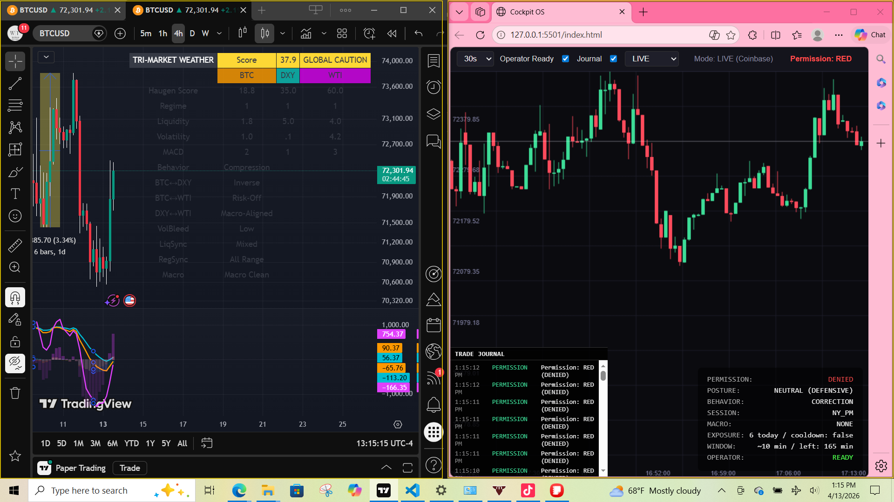

J D Lancaster
Healthcare Professional → UI/Tech Transition • Data Annotation • AI Evaluation • QA Testing
About Me
I’m a multidisciplinary professional with experience in healthcare, behavioral support, and real‑time digital systems. I learn by building, and I’ve developed strong skills in UI logic, data evaluation, and structured workflows through hands‑on projects. I’m currently focused on remote opportunities in data annotation, AI evaluation, content review, QA testing, and entry‑level UI roles.
Featured Project
Real-Time Operator Dashboard (2025–2026)
Role: UI Builder • System Tester • Logic Evaluator
Tech: JavaScript, UI Components, Event-Driven Systems, Real-Time Rendering
I built and tested a custom operator dashboard designed to simulate real-time decision-making environments. The system includes modular UI panels, a live chart rendering engine, state-driven behavior engines, and event-based updates. This project demonstrates my ability to debug, evaluate system logic, and build interactive user interfaces.
Project Screenshots
Here are live screenshots from my Cockpit OS project, showing real-time chart rendering, system permissions, and UI panels.





Skills
• Data Annotation
• AI Output Evaluation
• UI Component Building
• JavaScript (Beginner–Intermediate)
• Debugging & Logic Testing
• Real-Time Dashboard Interaction
• ABA Data Collection
• Behavior Plan Implementation
• Mental Health First Aid
• Crisis De-escalation
• Patient Monitoring
• Documentation Accuracy
• Communication
• Structured Workflows
• Time Management
• Microsoft Teams & Outlook
• EHR Familiarity
• Independent Learning
Experience
Behavior Technician Intern — A Friendly Face
Implemented behavior plans, collected data, and maintained client safety.
Certified Home Health Aide — Elara Caring & Selfhelp
Supported clients with ADLs, mobility, and documentation.
Freelance Tutor — Varsity Tutors
Helped students with writing, organization, and comprehension.
Contact
Email: jdlancaster99@gmail.com
Location: Brooklyn, NY
Website: https://whattospeak.webflow.io/